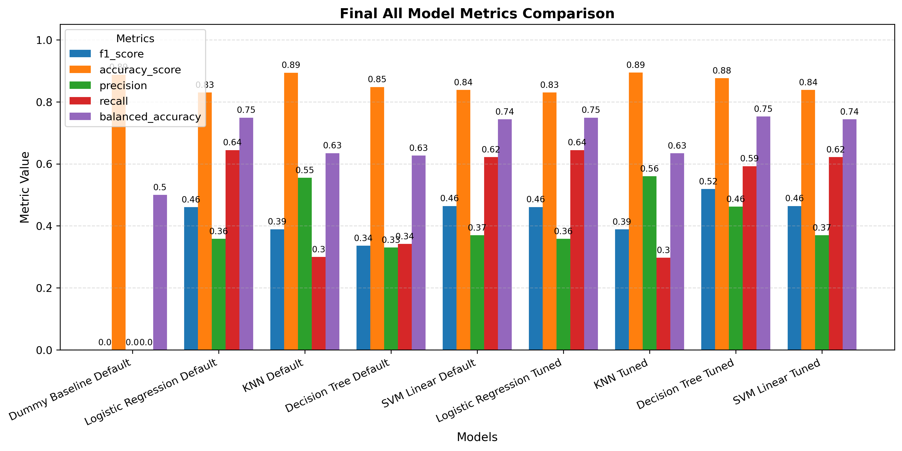

Executive Summary
A Portuguese bank achieved only ~11% conversion across 41,000+ marketing calls. This project builds predictive models to reduce wasted outreach while maintaining strong recall of high-potential customers.
41,188
Total Campaign Records
11.3%
Baseline Conversion Rate
0.519
Best F1 Score (Tuned Decision Tree)
0.798
Best ROC-AUC
Business Objective
- Reduce unnecessary telemarketing calls by 20–30%
- Increase subscriber targeting precision
- Deploy interpretable model for stakeholder trust
Modeling Approach
Four supervised classifiers were benchmarked:
- Logistic Regression
- K-Nearest Neighbors
- Decision Tree
- Support Vector Machine (Linear)
Evaluation emphasized F1 score, ROC-AUC, Precision, Recall, and Balanced Accuracy due to 11% class imbalance.
Model Performance (Final Comparison)
| Model | F1 | ROC-AUC | Precision | Recall | Fit Time |
|---|---|---|---|---|---|
| Logistic Regression (Tuned) | 0.461 | 0.799 | 0.359 | 0.644 | 1.52s |
| Decision Tree (Tuned) | 0.519 | 0.798 | 0.462 | 0.593 | 0.13s |
| SVM Linear (Tuned) | 0.467 | 0.792 | 0.368 | 0.639 | 17.4s |
| KNN (Tuned) | 0.388 | 0.752 | 0.560 | 0.297 | 0.003s |
Recommendation: Tuned Decision Tree offers the best trade-off between recall and precision while remaining computationally efficient and interpretable.
Key Insights
- Previous campaign success is the strongest predictive signal (~65% conversion when prior success)
- Students and retirees convert at higher rates
- Month of contact significantly impacts conversion probability
- Macroeconomic indicators exhibit strong correlation clusters

Deployment Considerations
- Use class-weighted training to handle imbalance
- Monitor precision/recall trade-offs monthly
- Re-train quarterly to adjust for macroeconomic shifts
- Integrate scoring into CRM pre-call filtering workflow
Technical Stack
- Python
- pandas
- scikit-learn
- Matplotlib / Seaborn
- Jupyter Notebook
Project Implementation
The full codebase for this project is open-source and available on GitHub:
https://github.com/VinnyBabuManjaly/bank-deposit-subscription-predictor
The repository includes:
- Jupyter notebooks with full modeling and analysis
- Dataset and cleaning scripts
- Trained model artifacts
- Plots and visualizations
- Results tables and evaluation metrics